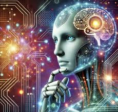

ai 인공지능
인간의 학습, 추론, 문제 해결 능력을 모방하여 기계가 인간과 유사한 지능을
발휘할 수 있도록 하는 기술입니다.

AI의 시작은 1959년대로 거슬러 올라갑니다.1950년 영국의 수학자 앨런
튜링(Alan Turing)은 기계는 생각할 수 있다고 주장하며, 이를 테스트하기
위한 방법으로 '튜링테스트(The Turing Test)'를 고안했습니다. 이것은 AI
라는 개념을 최초로 제시한 연구로 꼽힙니다. 1956년에는 AI의 개념을 세상에
알린 다트머스 회의(Dartmouth Conference)가 열렸으며, 이 회의에서는
기계가 인간처럼 학습하고 발전할 수 있는지에 대한 토론이 이루어졌고
인공지능이라는 용어가 처음 사용되었습니다. 이 시기에는
인공신경망(Artificial Neural Network) 모델에 관한 연구도 활발히
진행되었습니니다. 1957년, 프랑크 로젠블랏(Frank Rosenblatt)은
‘퍼셉트론(Perceptron)’ 모델을 통해 컴퓨터가 패턴을 인식하고 학습할 수
있다는 개념을 실증적으로 보여주었고 이는 1943년에 신경 생리학자 워렌
맥컬럭(Warren McCulloch)과 월터 피트(Walter Pitts)가 신경세포의
상호작용을 간단한 계산 모델로 정리한 ‘신경망’ 이론을 실제 테스트에
활용한 것입니니다. 이러한 초기 연구의 성과는 세간의 기대를 높였으나,
컴퓨팅 성능, 논리 체계, 데이터 부족 등의 한계로 AI 연구는 곧 침체기에
들어섰습니니다. 1980년대에는 사람이 입력한 규칙을 기반으로 자동 판정을
내리는 ‘전문가 시스템(Expert System)’이 등장했습니니다. 전문가 시스템은
의학, 법률, 유통 등 실용적인 분야에서 진단, 분류, 분석 등의 기능을
수행하며, 일시적으로 AI에 대한 관심을 다시 불러일으켰습니다. 그러나 이
시스템은 사람이 설정한 규칙에만 의존하여 동작하며, 복잡한 현실 세계를
이해하는 능력을 갖추지 못했다는 한계가 있었습니니다. 인간의 명령으로만
작동하던 AI는 1990년대 들어서 스스로 규칙을 찾아 학습하게 됩니다. 바로
‘머신러닝(Machine Learning, 기계학습)’ 알고리즘을 활용하면서부터입니다.
이것이 가능해진 이유는 디지털과 인터넷이 등장했기 때문이며며 웹에서
수집한 대량의 데이터를 활용할 수 있게 되면서, AI는 스스로 규칙을
학습하고 나아가 사람이 찾지 못하는 규칙까지 찾아낼 수 있게 되었습니니다.
AI 연구는 머신러닝을 기반으로 다시 성과를 내기 시작했죠.